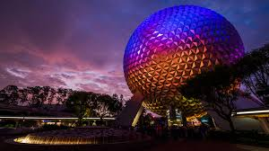

The Begining

The Present
Stepping through the magical doors of Walt Disney World is not what it once was. Disney has expanded beyond even what Walt, himself, imagend for the park. Since its opening there has been an addition of thre major parks. Through the last decade there has been many additions and renovations within each of these parks to add new rides and to make the parks more intriget. If you decide to setp into the beautful world of Pandora, located in the depth of Animal Kingdom, it is as if you have steped inside the mystical film of Avitar. All these additions have made Disney what it is. However, because of this, they have raised the price of tickets by an exorbitant amount.The Rising Price of Tickets
show the graph you made here